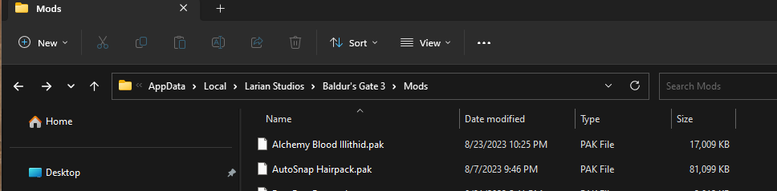
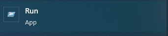
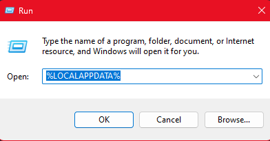
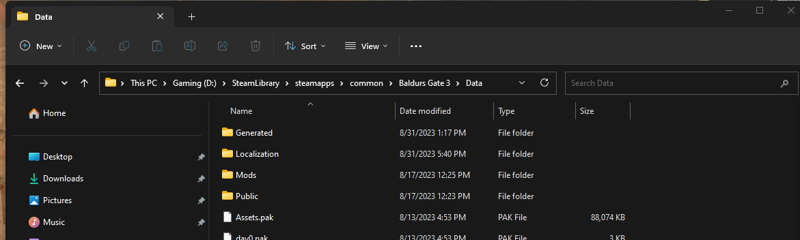
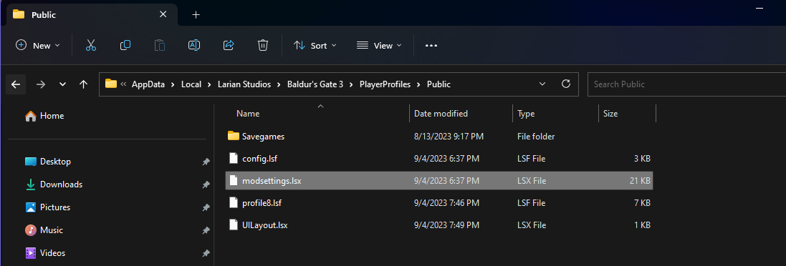
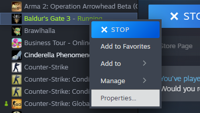
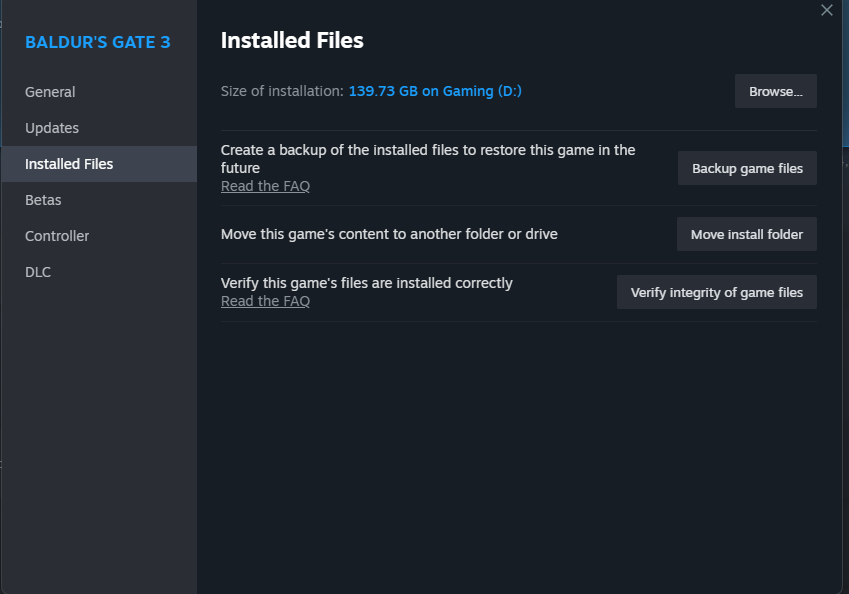
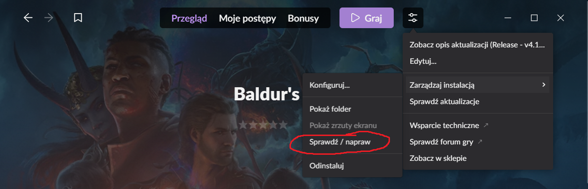

First, this guide is meant as a reference to walk you through resetting your modsetting file, in addition it will help get you to a point where you can test if you have additional issues with mod incompatibilities. Like it or not, this is a vital step in helping ensure the problem is found through careful elimination. Most issues often get fixed with this turn it on/off solution.
Keep in mind with these photos I have mods, some of these you may see different folders/files that are not commonly shared - completely fine, I will point out which ones you need to delete and what NOT to delete.
Please, keep in mind the location visible should be similar, this isn’t your installation folder
Additionally, you can choose to move them out in a temporary folder, if you plan on keeping your mods. All the mods should be in the format of .pak Here is how to find the mods folder:
Do Not Delete your entire Larian or BG3 folder, your saves are fine. just navigate & delete the pak files inside mods folder itself.(Even full reinstalls don’t need this)
C:\Users\YourName\AppData\Local\Larian Studios\Baldur's Gate 3\Mods 
If you do not know how to find your AppData folder, here's how: 

Just go to the windows search function at the start, type ‘Run’ and click on it. In that app, type %LOCALAPPDATA% and press okay. Your appdata folder should be opened in file explorer.
Delete all folders except Localization. Photo for reference. Localization is vanilla. You should only delete folders here, leave the pak files alone.
The path should look something like this, depending on the drive you installed Baldurs Gate on:
D:\SteamLibrary\steamapps\common\Baldurs Gate 3\Data

Again do not delete the .pak files. Leave the .pak files and other files alone. Only delete the folders INSIDE of data. This means localization and the other .pak files is the only thing you see inside of /data once done. If you delete anything besides what is described here - your game is going to have to be reinstalled almost from scratch.
The pathway should look like this: D:\SteamLibrary\steamapps\common\Baldurs Gate 3\bin
If you have native mod loader OR script extender, do these extra steps:
Inside your game's bin folder:
NativeMods folder.Dwrite.dll. (This is the Script Extender)bind2w64.dllbink2w64_original.dll to bink2w64.dllMAKE SURE YOU HAVE DONE THE ABOVE
If you have Party Limit Begone Legacy installed, then you will need to delete your exe files in your bin folder. Delete the backup too
The exes do not get altered/reinstalled when you verify the game so this is a MUST! if you had Party limit begone mod legacy. If you use the .pak version then do not worry and skip this step!
modsettings.lsx FileYou can find modsettings.lsx in C:\Users\YourName\AppData\Local\Larian Studios\Baldur's Gate 3\PlayerProfiles\Public
Delete the highlighted modsettings.lsx file

Go to your steam library and right click on Baldur's Gate 3

Click on Properties as shown above

This menu will appear - click on Installed Files and then on Verify integrity of game files
Now you just wait until it is done Do not worry if a lot files needs to be replaced - if you have loose file mods, these will likely need to be replaced

The picture is not in english but the option is highlighted. I will see if I can find an english version as I do not use GOG but nevertheless thank you Nerogami for the picture.
modsettings.lsx fileTest if you can reach character creation without issues, look around for bugs, if none quickly make a base tav & test if tutorial loads fine. If so you’re good to mod or play vanilla
Credits to Maze & DefinitiveToast for making this guide.
This guide was created using an already known guide, the original creators name has been lost. Hence why if you know the original creators name, pls tell us! I would like to credit the original creator